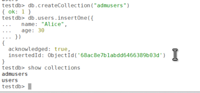
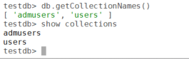

MongoDB, a leading NoSQL database, stores data in a flexible, JSON-like format called BSON (Binary JSON). At the core of its data organization are collections, the primary structure for storing documents. This post explores what collections are, their characteristics, and how to work with them effectively.
A collection is a group of documents, analogous to a table in a relational database. Unlike tables, collections are schema-less: documents in the same collection can have different structures, fields and data types. This flexibility makes MongoDB well suited to dynamic, unstructured or semi-structured data.
For example, a collection named users might contain documents like:
{
"_id": 1,
"name": "Alice",
"age": 30,
"city": "New York"
}
{
"_id": 2,
"name": "Bob",
"email": "bob@example.com"
}The two documents have different fields (age and city vs. email), yet they coexist in the same collection.
| Relational database | MongoDB |
|---|---|
| Database | Database |
| Table | Collection |
| Row | Document |
| Column | Field |
You can create a collection explicitly with createCollection(), or implicitly by inserting a document.
db.createCollection("admusers")db.users.insertOne({
name: "Alice",
age: 30
})This creates the users collection if it doesn't already exist, and inserts the document.

To list all collections in the current database:
db.getCollectionNames()
show collections
getCollectionNames() returns an array; show collections prints one name per line.To remove a collection and all its documents:
db.users.drop()drop() deletes every document in the collection, and its indexes, permanently. Take a backup first if you might need the data.users instead of u). Avoid spaces and special characters.db.createCollection("logs", { capped: true, size: 5242880, max: 1000 })size is the maximum size in bytes (5242880 = 5 MB) and max is the maximum number of documents. Whichever limit is reached first triggers overwriting of the oldest documents.